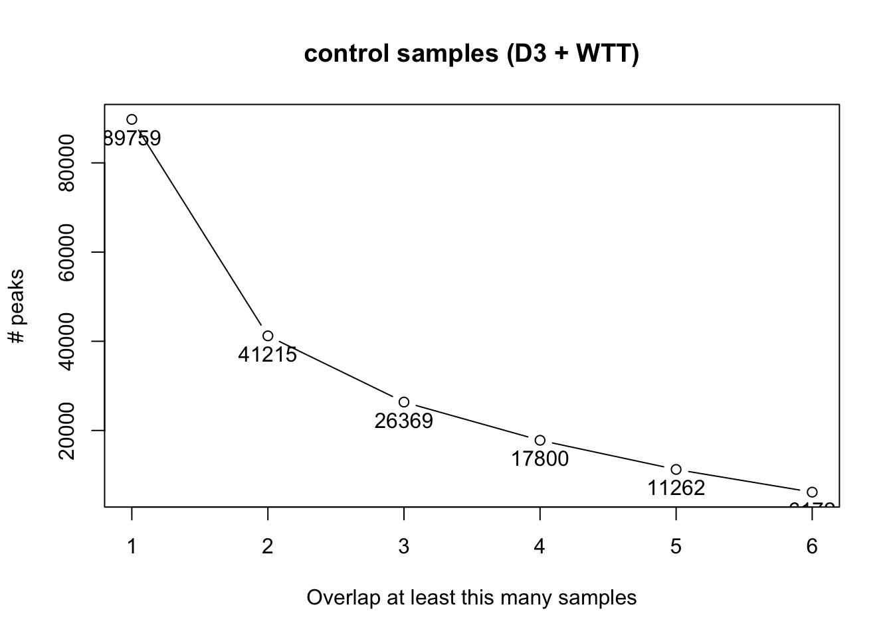
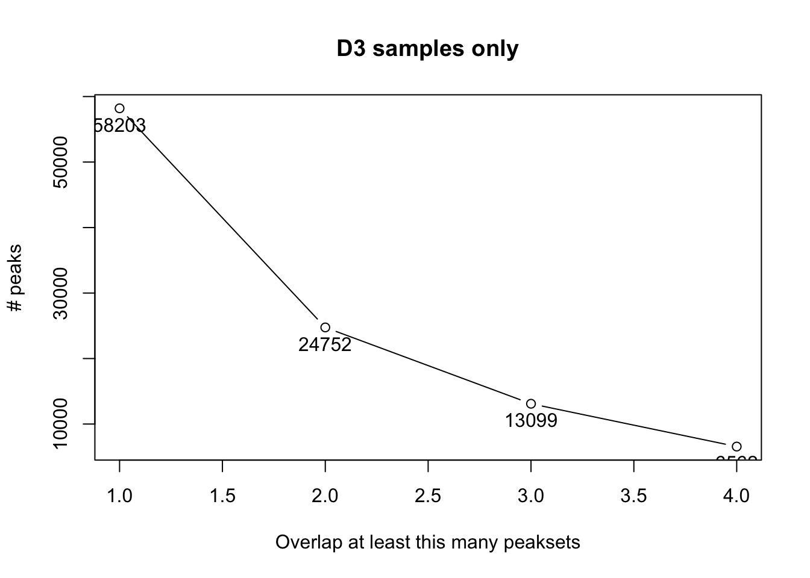

The peak files have been produced using SEACR 1. Brifley, after peak call, peaks of less than 1000nt were excluded from the final set in the understanding that < 1kb peaks are not bona fide H3K9me3 marks.
Use telomere and centromere coordinates to remove these from the peak sets found by SEACR.
To obtain the coords for telomeres and centromeres I used https://genome.ucsc.edu server. This information can be found in the “gap” database table. Use the Table Browser (https://genome.ucsc.edu/cgi-bin/hgTables) to extract it. To do this, select your assembly, in ‘group’ select ‘All Tables’, in ‘tables’ select ‘gap’, in ‘filter’ click ‘Create’ button. Set the ‘type’ field to ‘centromere telomere’ (separated by a space). By doing this, I only managed to obtain the telomeres coordinates. Save file as BED format.
For centromeres, I use the coordinates provided in this pakcage https://www.rdocumentation.org/packages/GWASTools/versions/1.18.0; function data(centromeres.hg38)
Write the new filtered peaks files to a new directory.
Modify sample sheet. New sample sheet looks like:
| SampleID | Tissue | Condition | Replicate | Peaks | PeakCaller | Treatment |
|---|---|---|---|---|---|---|
| D3-H3K9me3-rep1 | HeLa | D3 | 1 | data/Peaks-seacr-filter/D3-H3K9me3-rep1.stringent.1000long.bed | bed | ctrl |
| D3-H3K9me3-rep2 | HeLa | D3 | 2 | data/Peaks-seacr-filter/D3-H3K9me3-rep2.stringent.1000long.bed | bed | ctrl |
| TKO-H3K9me3-rep1 | HeLa | TKO | 1 | data/Peaks-seacr-filter/TKO-H3K9me3-rep1.stringent.1000long.bed | bed | exp |
| TKO-H3K9me3-rep2 | HeLa | TKO | 2 | data/Peaks-seacr-filter/TKO-H3K9me3-rep2.stringent.1000long.bed | bed | exp |
| WTT-H3K9me3-rep1 | HeLa | WTT | 1 | data/Peaks-seacr-filter/WTT-H3K9me3-rep1.stringent.1000long.bed | bed | ctrl |
| WTT-H3K9me3-rep2 | HeLa | WTT | 2 | data/Peaks-seacr-filter/WTT-H3K9me3-rep2.stringent.1000long.bed | bed | ctrl |
| mutT-H3K9me3-rep1 | HeLa | mutT | 1 | data/Peaks-seacr-filter/mutT-H3K9me3-rep1.stringent.1000long.bed | bed | exp |
| mutT-H3K9me3-rep2 | HeLa | mutT | 2 | data/Peaks-seacr-filter/mutT-H3K9me3-rep2.stringent.1000long.bed | bed | exp |
| D3-H3K9me3-rep3 | HeLa | D3 | 3 | data/Peaks-seacr-filter/D3-H3K9me3-rep3.stringent.1000long.bed | bed | ctrl |
| D3-H3K9me3-rep4 | HeLa | D3 | 4 | data/Peaks-seacr-filter/D3-H3K9me3-rep4.stringent.1000long.bed | bed | ctrl |
| TKO-H3K9me3-rep3 | HeLa | TKO | 3 | data/Peaks-seacr-filter/TKO-H3K9me3-rep3.stringent.1000long.bed | bed | exp |
| TKO-H3K9me3-rep4 | HeLa | TKO | 4 | data/Peaks-seacr-filter/TKO-H3K9me3-rep4.stringent.1000long.bed | bed | exp |
Use clean set of SEACR peaks to find a consensus set of peaks based on the ctrl samples (D3 and WTT)
The following plots shows the number of peaks for the control samples (D3 plus WTT) and the overlap rate. We make use of some of the practical functionalities of the R package DiffBind to find the consensus peaks based on their coordinates overlap.


Ideally, the number of peaks should plato as the number of overlaps increases. This is not the case for these samples probably because there is much variation among samples. Therefore, we proceed with a permissive set of peak as we will only focus on those that that are differentially enriched/bound.
## R version 3.6.1 (2019-07-05)
## Platform: x86_64-apple-darwin15.6.0 (64-bit)
## Running under: macOS Mojave 10.14.6
##
## Matrix products: default
## BLAS: /Library/Frameworks/R.framework/Versions/3.6/Resources/lib/libRblas.0.dylib
## LAPACK: /Library/Frameworks/R.framework/Versions/3.6/Resources/lib/libRlapack.dylib
##
## locale:
## [1] en_GB.UTF-8/en_GB.UTF-8/en_GB.UTF-8/C/en_GB.UTF-8/en_GB.UTF-8
##
## attached base packages:
## [1] parallel stats4 stats graphics grDevices utils datasets
## [8] methods base
##
## other attached packages:
## [1] kableExtra_1.1.0 DEScan_0.99.0
## [3] GWASTools_1.30.1 gdata_2.18.0
## [5] DESeq2_1.24.0 DiffBind_2.12.0
## [7] SummarizedExperiment_1.14.1 DelayedArray_0.10.0
## [9] BiocParallel_1.18.1 matrixStats_0.55.0
## [11] Biobase_2.44.0 GenomicRanges_1.36.1
## [13] GenomeInfoDb_1.20.0 IRanges_2.18.3
## [15] S4Vectors_0.22.1 BiocGenerics_0.30.0
## [17] knitr_1.25
##
## loaded via a namespace (and not attached):
## [1] backports_1.1.5 GOstats_2.50.0
## [3] Hmisc_4.2-0 lazyeval_0.2.2
## [5] GSEABase_1.46.0 splines_3.6.1
## [7] ggplot2_3.2.1 amap_0.8-17
## [9] digest_0.6.21 htmltools_0.4.0
## [11] GO.db_3.8.2 magrittr_1.5
## [13] checkmate_1.9.4 memoise_1.1.0
## [15] BSgenome_1.52.0 base64url_1.4
## [17] cluster_2.1.0 limma_3.40.6
## [19] readr_1.3.1 Biostrings_2.52.0
## [21] annotate_1.62.0 systemPipeR_1.18.2
## [23] sandwich_2.5-1 prettyunits_1.0.2
## [25] colorspace_1.4-1 rvest_0.3.4
## [27] blob_1.2.0 rappdirs_0.3.1
## [29] ggrepel_0.8.1 pan_1.6
## [31] xfun_0.10 dplyr_0.8.3
## [33] crayon_1.3.4 RCurl_1.95-4.12
## [35] graph_1.62.0 lme4_1.1-21
## [37] genefilter_1.66.0 zeallot_0.1.0
## [39] brew_1.0-6 survival_2.44-1.1
## [41] VariantAnnotation_1.30.1 zoo_1.8-6
## [43] glue_1.3.1 gtable_0.3.0
## [45] zlibbioc_1.30.0 XVector_0.24.0
## [47] webshot_0.5.1 Rsubread_1.34.7
## [49] MatrixModels_0.4-1 Rgraphviz_2.28.0
## [51] SparseM_1.77 jomo_2.6-9
## [53] scales_1.0.0 pheatmap_1.0.12
## [55] DBI_1.0.0 edgeR_3.26.8
## [57] Rcpp_1.0.2 viridisLite_0.3.0
## [59] xtable_1.8-4 progress_1.2.2
## [61] htmlTable_1.13.2 quantsmooth_1.50.0
## [63] foreign_0.8-72 bit_1.1-14
## [65] Formula_1.2-3 AnnotationForge_1.26.0
## [67] htmlwidgets_1.5.1 httr_1.4.1
## [69] logistf_1.23 gplots_3.0.1.1
## [71] RColorBrewer_1.1-2 acepack_1.4.1
## [73] mice_3.6.0 pkgconfig_2.0.3
## [75] XML_3.98-1.20 nnet_7.3-12
## [77] locfit_1.5-9.1 DNAcopy_1.58.0
## [79] tidyselect_0.2.5 rlang_0.4.0
## [81] AnnotationDbi_1.46.1 munsell_0.5.0
## [83] tools_3.6.1 generics_0.0.2
## [85] RSQLite_2.1.2 broom_0.5.2
## [87] evaluate_0.14 stringr_1.4.0
## [89] yaml_2.2.0 bit64_0.9-7
## [91] gdsfmt_1.20.0 caTools_1.17.1.2
## [93] purrr_0.3.2 mitml_0.3-7
## [95] RBGL_1.60.0 nlme_3.1-141
## [97] quantreg_5.51 GWASExactHW_1.01
## [99] xml2_1.2.2 biomaRt_2.40.5
## [101] compiler_3.6.1 rstudioapi_0.10
## [103] tibble_2.1.3 geneplotter_1.62.0
## [105] stringi_1.4.3 highr_0.8
## [107] GenomicFeatures_1.36.4 lattice_0.20-38
## [109] Matrix_1.2-17 nloptr_1.2.1
## [111] vctrs_0.2.0 lifecycle_0.1.0
## [113] pillar_1.4.2 lmtest_0.9-37
## [115] data.table_1.12.2 bitops_1.0-6
## [117] rtracklayer_1.44.4 R6_2.4.0
## [119] latticeExtra_0.6-28 hwriter_1.3.2
## [121] ShortRead_1.42.0 KernSmooth_2.23-15
## [123] gridExtra_2.3 boot_1.3-23
## [125] MASS_7.3-51.4 gtools_3.8.1
## [127] assertthat_0.2.1 Category_2.50.0
## [129] rjson_0.2.20 withr_2.1.2
## [131] GenomicAlignments_1.20.1 batchtools_0.9.11
## [133] Rsamtools_2.0.2 GenomeInfoDbData_1.2.1
## [135] mgcv_1.8-29 hms_0.5.1
## [137] grid_3.6.1 rpart_4.1-15
## [139] minqa_1.2.4 tidyr_1.0.0
## [141] rmarkdown_1.16 base64enc_0.1-3